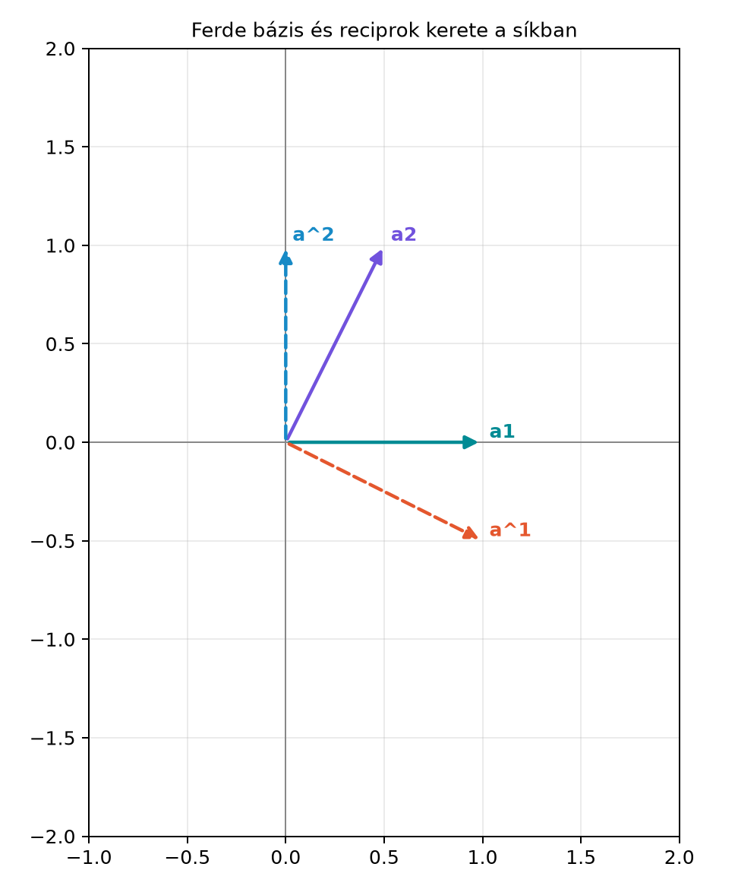

Egy ortonormált bázisban a koordináták kiolvasása nagyon egyszerű: ha
,
akkor
,
,
.
A skalárszorzat mintha „megmérné”, mennyi van az adott irányú
komponensből.
Mi történik azonban akkor, ha a bázisvektorok nem merőlegesek
egymásra? Egy ferde (nem ortogonális) bázisban például az
irányú komponenst úgy is meg lehet változtatni, hogy közben az
irányú skalárszorzat is megváltozik, mert
és
nem merőlegesek, így „látják” egymás komponenseit. Ekkor az
értékek már nem adják közvetlenül a megfelelő koordinátákat.
A kristálytanban, a szilárdtest-fizikában és számos
differenciálgeometriai feladatban mégis gyakran kell ferde bázisokkal
dolgozni. A kérdés tehát: hogyan lehet úgy definiálni egy, az eredeti
bázishoz illeszkedő segédbázist, hogy a skalárszorzat ismét kiolvassa a
koordinátákat? Erre ad választ a reciprok keret
(reciprocal frame).
15.1.2 Szemléletes kép
Képzeljünk el egy síkbeli, ferde bázist. Az
és
vektorok nem merőlegesek egymásra, például
,
.
A reciprok keret első vektora,
,
merőleges lesz
-re,
a második,
,
pedig merőleges lesz
-re.
Így amikor
-et
megszorozzuk skalárisan
-gyel,
az
irányú komponens nem zavar, mert az
merőleges rá; a kapott érték éppen az
irányú koordináta.

Ferde bázis és reciprok kerete a síkban -
A fekete vektorok a ferde bázis: a1=(1,0), a2=(0.5,1). A szaggatott
vektorok a reciprok keret: a^1=(1,-0.5), a^2=(0,1).
Az ábrán látható, hogy
merőleges
-re,
pedig merőleges
-re.
A hosszakat úgy választjuk meg, hogy
teljesüljön.
15.1.3 Definíció
Definíció. Legyenek
lineárisan független vektorok a
geometriai algebrában, azaz
.
Az ezekhez tartozó reciprok keret (reciprocal frame)
három olyan vektor,
,
amelyekre
ahol
a Kronecker-delta:
,
ha
,
és
,
ha
.
A felső index itt nem hatványozást jelent, hanem a reciprok keret
elemeit különbözteti meg az eredeti bázisvektorok alsó indexétől. Ez a
jelölés a tenzoralgebrában is használatos, de itt egyszerűen csak egy
megkülönböztető indexelés. A reciprok keret maga is bázis, tehát bármely
vektor felírható
alakban is.
15.1.4 A reciprok keret kiszámítása
dualitással
A Dualitás: bivektor ↔︎ normálvektor,
alfejezetben láttuk, hogy G(3)-ban egy bivektor duálisa vektor. Ez most
közvetlenül segít: az
vektornak merőlegesnek kell lennie
-re
és
-ra,
tehát párhuzamosnak kell lennie
duálisával. A pontos hosszúságot pedig az
feltétel szabja meg.
Tétel. Legyen
.
Ekkor a reciprok keret elemei:
Bizonyítás. Csak az
-re
vonatkozó állítást bizonyítjuk, a többi teljesen analóg. Jelölje
Mivel G(3)-ban egy bivektor szorozva egy trivektor inverzével vektort
ad (ez éppen a dualitás),
valóban vektor. Szorozzuk meg
-t
geometriai értelemben
-gyel:
A vektor és bivektor szorzatát szétbonthatjuk belső és külső
részre:
Az utolsó tagban
így
A másik tag,
egy vektor, amelyet megszorozva
-gyel
bivektort kapunk; ennek nincs skalár része. Ezért
ahol
a skalárrész képzése. A vektorok skalárszorzatának definíciója szerint
,
tehát
Most vizsgáljuk
-t.
Ekkor
A külső szorzat
,
mert két azonos vektor külső szorzata nulla. Így az egész kifejezésből
csak vektor szorozva
-gyel
marad, ami bivektort ad, tehát
Ugyanígy
.
Ezért
teljesíti a reciprok keret első vektorára előírt feltételeket. Mivel a
feltételek a bázis linearis függetlensége miatt egyértelműek,
.
A másik két vektorra a bizonyítás ugyanígy megy. ∎
15.1.5 Koordináták kiolvasása a
reciprok kerettel
A reciprok keret legfontosabb tulajdonsága az, hogy visszaadja a
koordinátákat a skalárszorzaton keresztül.
Tétel. Ha
akkor
Bizonyítás. Vegyük a skalárszorzatot
-vel:
Mivel a skalárszorzat szimmetrikus,
Ezért
Ez éppen a kívánt összefüggés. ∎
A képlet azt jelenti, hogy a reciprok keret elemei nem az eredeti
bázisvektorok „irányába” mutatnak, hanem úgy vannak beállítva, hogy csak
a megfelelő koordinátát érezzék.
15.1.6 Kidolgozott példa
Legyen
Ez a bázis ferde, mert
és
nem merőlegesek. Először meghatározzuk a bázis pszeudoszkalárját:
A külső szorzat disztributív, és
,
ezért
Itt
a G(3) standard pszeudoszkalárja. Most kiszámítjuk az első reciprok
vektort:
A külső szorzatot elvégezve:
Itt használtuk, hogy
,
valamint a bázispengék rövidítését. A dualitási szabályok alapján
Ezt a Dualitás alfejezetben levezetett
összefüggésekből tudjuk, és az előző bizonyítás is megerősíti. Tehát
Ellenőrizzük a feltételeket:
Tehát
valóban reciprok vektor.
A második reciprok vektor:
Valóban:
A harmadik reciprok vektor:
Itt
,
a többi pedig nulla. A reciprok keret tehát
Vegyük például az
vektort. Ekkor a koordináták közvetlenül a reciprok kerettel:
Hasonlóan
,
.
A reciprok keret tehát visszaadja az eredeti koordinátákat.
15.1.7 Kristályrács példa: a
reciprok rács
A szilárdtest-fizikában egy kristályrácsot három, nem feltétlenül
merőleges primitív vektor,
feszít ki. Az
egész koordinátájú rácspontok alkotják a direkt rácsot.
A reciprok rács vektorait gyakran
alakban írják. Geometriai algebrai nyelven ez éppen a reciprok keret,
legfeljebb egy
szorzó kérdése: a fenti képletekben a vektoriális szorzat helyett a
megfelelő bivektort és a pszeudoszkalárral való inverzet használjuk. A
reciprok rács azért hasznos, mert a kristályban terjedő hullámok,
elektronállapotok és diffrakciós csúcsok matematikája a reciprok rácsban
válik egyszerűvé. Itt most a geometriai algebrai reciprok keret a
nélküli, geometriai alapváltozat.
15.1.8 Python-ellenőrzés a mini
könyvtárral
Az alábbi függvény kiszámítja a reciprok keretet a ga3
modul MV3 osztályával. A függvény a bázisvektorokat
MV3 objektumokként kapja, és a reciprok keret három elemét
adja vissza.
A | operátor a vektorok skalárszorzatát jelöli a mini
könyvtárban, így a Kronecker-delta feltételek közvetlenül
ellenőrizhetők.
15.1.9 Tipikus hibák és
félreértések
A reciprok vektor nem párhuzamos az eredeti
bázisvektorral. A definíció szerint
merőleges
-re
és
-ra,
ezért általában nem az
irányába mutat. Ortonormált bázis esetén speciálisan
,
de ferde bázisban ez nem igaz.
A külső szorzat előjele. Az
kiszámításához
kell, nem
.
A külső szorzat antikommutatív, a felcserélés előjelváltást ad: ha
valaki rossz sorrendet használ, az eredményül kapott vektor éppen
lesz, és a
-feltételeknél
helyett
jelenik meg.
Az
használata. A képletben
szerepel, nem a standard
;
a kettő akkor egyezik, ha
.
Ferde bázisban
általában nem egységtrivektor, de nem is szükségképpen különbözik a
standardtól: a fenti példában éppen
.
A döntő feltétel, hogy a bázis determinánsa nem nulla (a három vektor
lineárisan független), nem az ortonormalitás hiánya. Ha a standard
-gyel
számolunk, csak akkor kapunk helyes eredményt, ha
;
különben a bázis trivektorának nagysága és irányítása is
számít.
A felső index nem hatvány. Az
jelölés nem az
vektor négyzete, hanem a reciprok keret első eleme. Ez a jelölés az
irodalomban általános, de eleinte félreérthető. A szövegben mindig
mondjuk ki, hogy reciprok keretről van szó.
15.1.10 Feladatok
15.1.10.1 (a) Fogalmi kérdés
Miért nem működik általában ferde bázisban? Fogalmazd meg saját
szavaiddal, miért nem adja a ferde bázisban az
skalárszorzat a megfelelő koordinátát, és miért kell ehhez a reciprok
keret.
15.1.10.2 (b) Kézi számolás
Legyen G(3)-ban
Számítsd ki a reciprok keret három vektorát.
15.1.10.3 (c) Levezetési
feladat
Bizonyítsd be, hogy a tételben megadott
képlet valóban kielégíti az
feltételeket. Ez a bizonyítás a A vektorderivált
alfejezetben a ferde koordinátás parciális deriváltak felírásánál újra
előkerül, ezért fontos eredmény.
15.1.10.4 (d) Python-feladat
A fenti reciprocal_frame függvénnyel számold ki a
reciprok keretét az
ferde bázisnak. Ellenőrizd a Kronecker-delta feltételeket a
| operátorral, majd add meg az
vektor koordinátáit a reciprok kerettel kiszámítva.
15.1.11 Megoldások
15.1.11.1 (a)
Az ortonormált bázisban az
azért adja a koordinátát, mert a bázisvektorok páronként merőlegesek,
így a skalárszorzatban csak az
-edik
tag marad meg. Ha a bázisvektorok nem merőlegesek, akkor az
kifejezésben azok a
komponensek is adhatnak járulékot, amelyekre
.
Egy ferde bázisnak lehetnek merőleges vektorpárjai is (a fenti példában
merőleges
-re
és
-re),
ezért nem minden kereszttag feltétlenül nemnulla. A reciprok keret
pontosan azért van, hogy a
feltételt minden párra biztosítsa.
15.1.11.2 (b)
Kiszámítjuk az
pszeudoszkalárt:
Az első reciprok vektor:
Ellenőrzés:
,
,
.
A második:
De
,
és
,
tehát
Ellenőrzés:
,
,
.
A harmadik:
Ellenőrzés:
merőleges
-re
és
-re,
és
.
15.1.11.3 (c)
A bizonyítás lényegében ugyanaz, mint a tételben. Jelölje
.
Mivel G(3)-ban bivektor szorozva trivektor inverzével vektor,
vektor. Szorozzuk meg
-gyel:
A második tag
így
Az első tag vektor, így
-gyel
szorozva bivektor, skalárrésze nulla. Ezért
,
azaz
.
A
és
esetben a külső szorzat tagja eltűnik, mert
,
illetve
,
így a skalárrész nulla lesz. Tehát
és
.
Ezzel a feltételeket beláttuk.
A kimenetben a reciprok vektorok koordinátái és a kilenc pont szorzat
jelennek meg. A pont szorzatok az identitásmátrixot adják: 1, 0, 0, 0,
1, 0, 0, 0, 1. Ezután az
vektor koordinátáit a reciprok kerettel:
A kódban:
x =2* a1 - a2 +3* a3print("x^1 =", x | r1)print("x^2 =", x | r2)print("x^3 =", x | r3)
A várt kimenet x^1 = 2.0, x^2 = -1.0,
x^3 = 3.0, mert a reciprok keret pontosan a kívánt
koordinátákat adja vissza.
15.1.12 Rövid összefoglaló
A reciprok keret egy nem ortogonális, de lineárisan független
bázishoz rendelt segédbázis, amelyre
G(3)-ban a reciprok keret elemei a dualitás segítségével
számíthatók:
ahol
.
Ha
akkor a koordináták közvetlenül skalárszorzattal nyerhetők:
Ezt az eredményt használjuk a A vektorderivált
alfejezetben, ahol ferde koordinátákban a parciális deriváltakat
ugyanilyen reciprok kerettel fejezzük ki. A kristálytanban a reciprok
rács ugyanennek a konstrukciónak a
-vel
skálázott fizikai változata.